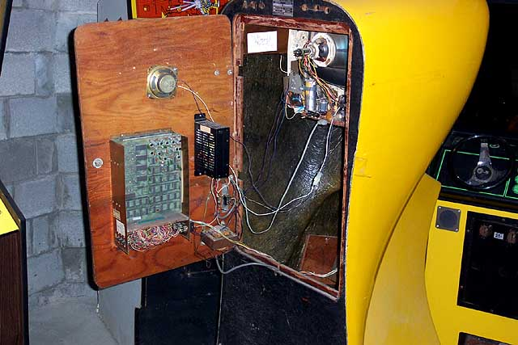

Look inside of the Computer Space before wheeling it up to the Driveway
for the Trucking company
to wrap-up and transport to be crated and shipped out to London.
Truck arrives to pick up the Yellow Computer Space for its trip out
to London for the "Game On" Exhibit.
The packers dide a superb job of packing the Computer Space, they spent
a great
deal of time wrapping the whole unit in Bubble Wrap.
Once Bubble wrapped, the Computer Space was then wrapped in moving mats
and carefully
loaded onto the truck to the shipping company, then it would be crated
and prepared
for shipping. Andy Welburn will be on hand in London to
ensure the Computer Space is
well taken care of while its placed on display at the exhibit.
More details, photo's and links to follow.